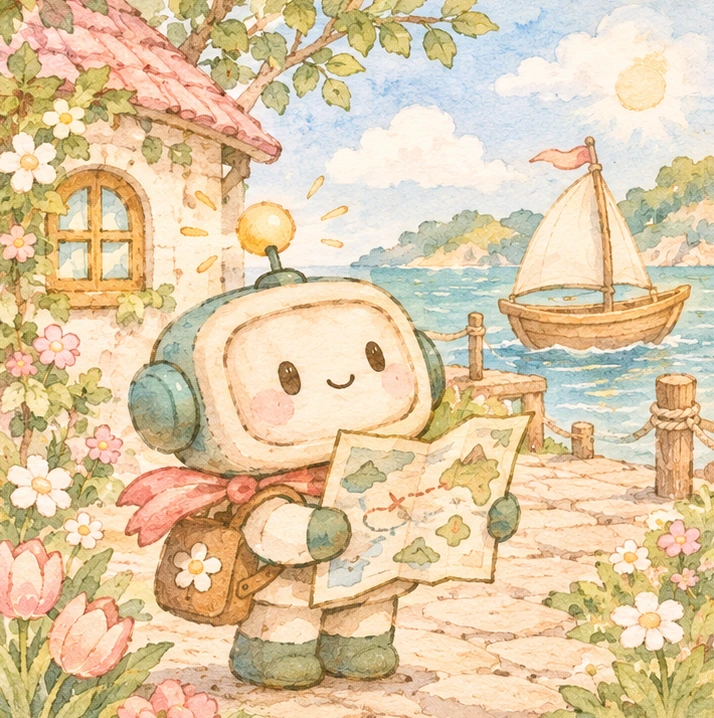
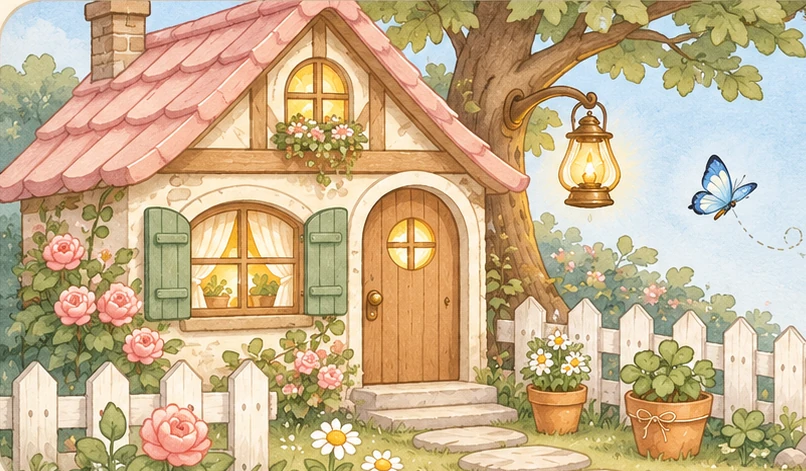
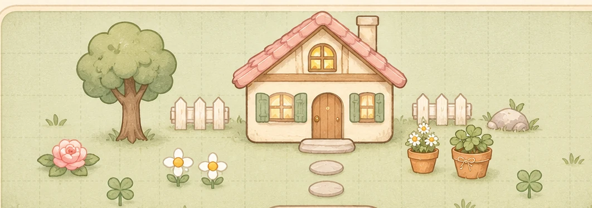
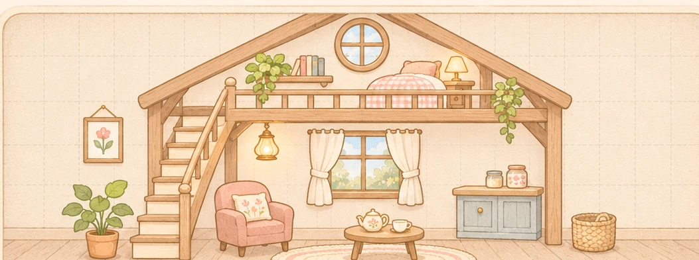
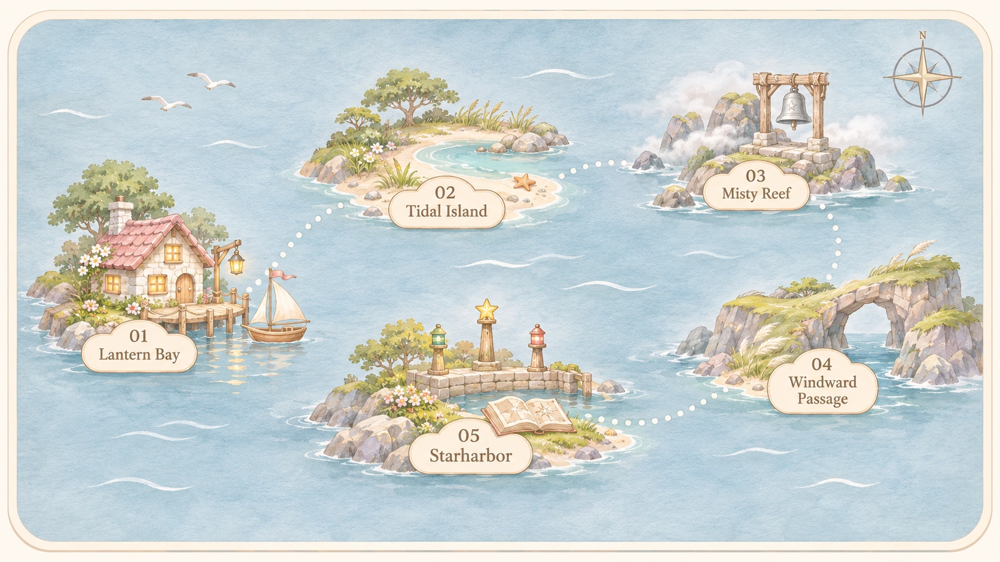

BOOK ONE · FIVE GARDEN STORIES
The Wondergarden
Little paths, a first flower, and the courage to grow.
Each chapter begins with a story. Each season opens a new little world.
Little paths, a first flower, and the courage to grow.

Set sail through currents, mist, wind and faraway lights.
A self-turning map, a floating academy in the clouds, and a new magical world waiting to open.
And when Kristie needs a little rest, her is always waiting.
A gentle record of discoveries, stars and stories completed along the way.
Each little adventure brings its own lesson.
Want to collect another memory?
One gentle story at a time.
Progress isn't always a straight line. Every step matters.
Kristie's story is waiting to begin.
✿ Every adventure begins with a first step.
A rainy meadow, an old wooden bridge...
Find a route for Kristie!
“The shortest path is not always the least costly one.”
A little control over how the garden moves.
The same setting is used when Kristie explores a map.
This will erase your saved journey and cottage layout on this browser.
Progress saves locally in this browser; it is not synced to GitHub.
A calm little home base between Season One and Season Two. Switch between the outdoor cottage garden and the indoor loft, and keep the soft storybook style that fits the rest of Little Steps.


A little dream of the garden Kristie can one day decorate. ♡


A tiny place to read, rest, drink tea and get ready for the next adventure. ♡
Pink roof, gentle sky blue, ivory fence, clover pots, and a quieter palette that sits naturally beside the main game.
A duplex-style loft with a bed upstairs, a tiny reading corner, soft wood tones, and a cozy table for tea and rest.
This is Kristie's resting place now, and it can later become the launching point for island voyages in Season Two and a magical Season Three.
The next page in Kristie’s story
Beyond the garden, the sea has its own rules.
One morning, a folded map washes up at Kristie's cottage. Five islands are marked in faded ink. A note is tucked inside: “You won't know every current. But you can learn to sail.”
“I know my way through the garden. But how do I learn the sea?”

Chapter 01 / The First Voyage
Try steering a little boat through reef and shallow water. Then train Kristie to find a route without being given the answer.
| Method | Steps | Cost |
|---|
BFS and Dijkstra know the map in advance. Kristie starts with Q values of zero and has to learn by trial and error.
Select a tile to inspect the learned Q values.
Q(s, a) is Kristie's estimated discounted reward for taking that action from this square. Values are estimates, not route lengths.
Field notebook · Reward rule: +40 at the lighthouse; −0.15 per move and −0.35 × movement cost; −3.5 for a collision. All model updates use this same environment. Lab note: This first voyage uses a small, deterministic grid. Future islands will introduce changing tides, uncertainty and more difficult state spaces. A learned policy can be imperfect even after hundreds of episodes.
Chapter 02 / The Tidal Island
The sandbar appears at low tide and disappears at high tide. Now Kristie must learn not only where to go, but when to move.
The tide is low. Your boat is waiting in the harbour.
The sandbar is passable only during low tide. If high tide arrives while Kristie is on it, the waves carry her back to the harbour.
Real experience, grouped in batches of 25.
Choose a tile, then select a tide phase.
These five Q-values are learned estimates of discounted reward, not distances. Each phase has its own state.
| Method | Moves | Waits | Travel cost |
|---|
The planning baselines know the entire tide cycle. The reinforcement-learning agents do not.
Lab notes. The tide changes every action (including Wait). Phases repeat in four steps: low, low, high, high. Stepping onto the sandbar when the next tide is high causes a reset to the harbour. Reward: +40 on arrival, −0.28 for waiting, −0.28 − 0.24 × terrain cost for a move, −2.5 for a blocked move, and −5.5 if swept away. This deterministic, fully observable time-expanded MDP is an educational simplification—not a physical tide model.
Chapter 03 / Misty Reef
Follow the distant silver bell through hidden reefs.
Real training experience, grouped in batches of 20 episodes.
Select a square to inspect its learned Q-values.
Run a chapter-specific experiment.
Meet Kristie, a tiny robot learning to find her way. Build a garden, explore winding paths, and discover how every little mistake can become a new beginning.
Every adventure begins with a little step.
✧ Find the glowing flower.
I wonder where this little path will lead...
We can learn the garden together, one little step at a time.
Can you help Kristie reach the glowing flower?
“Let's take one little step at a time.”
Choose Let Me Try, then use ↑←↓→ or WASD to move. Try your own path before asking an algorithm!
She found her way, one little step at a time.
✦ +50 XP · A new chapter unlocked
✦✿Once upon a little garden...